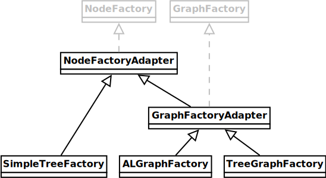

Package fr.cnrs.iees.graph.impl
Three implementations of the fr.cnrs.iees.graph interfaces. Although very different,
they have a common architecture: they can use graph elements (nodes and edges) that do not
contain data, that contain read-only data (immutable elements), or that contain read-write
data. This is indicated in the naming by adding the 'ReadOnlyData' prefix in element class name
in the second case, and the 'Data' prefix in the third case.
This enables to build graphs finely tuned to the programmer needs, i.e. with potentially
faster or lighter algorithms if no data is stored, or on the opposite with more elaborate
graph search methods when data is present as element attributes.
1. Adjacency list-based implementation of a graph.
This implementation uses an adjacency list to store the graph elements. Actually, every node stores its list of edges. All classes involved in this implementation are prefixed with 'AL' (for Adjacency List).

ALGraph represents a plain, generic, directed or undirected graph with possibly
unconnected sub-graphs.
2. Tree implementation.
This implementation of a tree has no edges - this is the best solution to control the correct structuration of the tree as it builds up by adding new nodes: each new node must have a single parent.
Notice that the SimpleTree implementation can actually have more than one root (i.e.
it's a forest rather
than a tree.
3. A Tree with cross-links.
This implementation is a mixture of the two previous ones: imagine a tree on which you add cross-links between nodes of the tree. Mathematically, this is nothing else than just a standard generic graph - it has lost its tree quality with the addition of cross-links. But there are many cases in real-life where there is a hierarchical structure further hidden by cross links between tree elements: think, for example, of a social network within a company where people are involved in friendship relations but also in hierarchical relations. Since we had a use for such a graph structure, we implemented it.
The TreeGraph class can be manipulated as a graph or as a tree. Consider it as a
graph with two kinds of edges, one of them (the parent-child type) imposing a hierarchical structure.
The factories used to instantiate nodes and edges in these three implementations are related:
These three implementations are just a basis to start with. We encourage people to provide their own implementation following the example of these ones.
- Author:
- Jacques Gignoux - 16 août 2021
-
Class Summary Class Description ALDataEdge AnALEdgesub-class with read-write data.ALDataNode AnALNodesub-class with read-write data.ALEdge ALGraph<N extends ALNode,E extends ALEdge> A graph implemented as an adjacency list (hence the "AL" prefix).ALGraphFactory The factory forALGraphs (node and edge factory).ALNode ALReadOnlyDataEdge AnALEdgesub-class with read-only (immutable) data.ALReadOnlyDataNode AnALNodesub-class with read-only (immutable) data.GraphFactoryAdapter A default abstract implementation ofGraphFactory.NodeFactoryAdapter A default abstract implementation ofNodeFactory.SimpleDataTreeNode ASimpleTreeNodesub-class with read-write data.SimpleReadOnlyDataTreeNode ASimpleTreeNodesub-class with read-only (immutable) data.SimpleTree<N extends TreeNode> A simple implementation ofTree.SimpleTreeFactory The factory forSimpleTrees (node factory only).SimpleTreeNode TheTreeNodeimplementation to use withSimpleTree.TreeGraph<N extends TreeGraphNode,E extends ALEdge> Implementation of a "treegraph", i.e. a graph with an internal tree structure or a tree with cross-links between its nodes.TreeGraphDataNode ATreeGraphNodesub-class with read-write data.TreeGraphFactory The factory forTreeGraphs (node and edge factory).TreeGraphNode TreeGraphReadOnlyDataNode ATreeGraphNodesub-class with read-only (immutable) data.